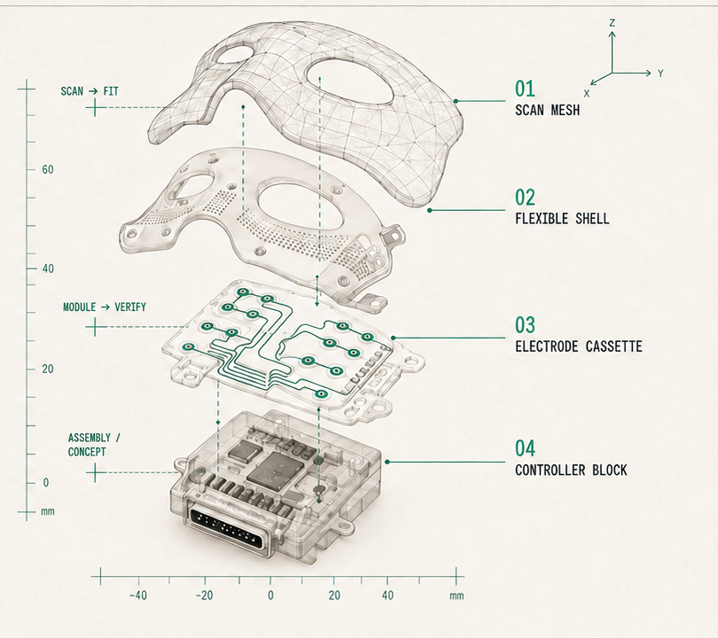

Repeatability before automation
Automating a variable process only reproduces uncertainty faster. Fit and placement controls come first.
01 · Platform
WinVerse™ is developing the productisation architecture around SerotoniX™, its first investigational programme. The pathway must improve repeatability without disguising the experimental status of the intervention.
Inside the platform
An investigational facial functional electrical stimulation programme connecting a participant-specific interface, supervised delivery workflow and evidence record.
Explore SerotoniX™System concept
A scalable research platform should not treat the mask as the entire product. The system must connect participant geometry, electrode architecture, controlled electronics and traceable session records.
Capture participant-specific geometry through a controlled fit workflow.
Separate fit-critical components from reusable electronics where evidence permits.
Record configuration, delivered dose, comfort and response quality.
Build the dataset needed for engineering, clinical and regulatory decisions.

Design principles
Automating a variable process only reproduces uncertainty faster. Fit and placement controls come first.
Study records should connect participant, configuration, session, operator and device state without relying on memory.
Reusable and disposable boundaries should follow safety, human-factors and manufacturing evidence—not aesthetic preference.
The platform should support qualified teams and approved protocols; it should not create autonomous treatment authority.
Development outputs
01Defined fit and electrode-placement tolerances
02Controlled manufacturing and assembly instructions
03Session-level configuration and dose records
04Human-factors, safety and verification evidence